Hobbies
Astrophotography
Deep sky imaging of nebulae, galaxies, and star clusters captured with Dwarf3 telescope. Click to view all the images!
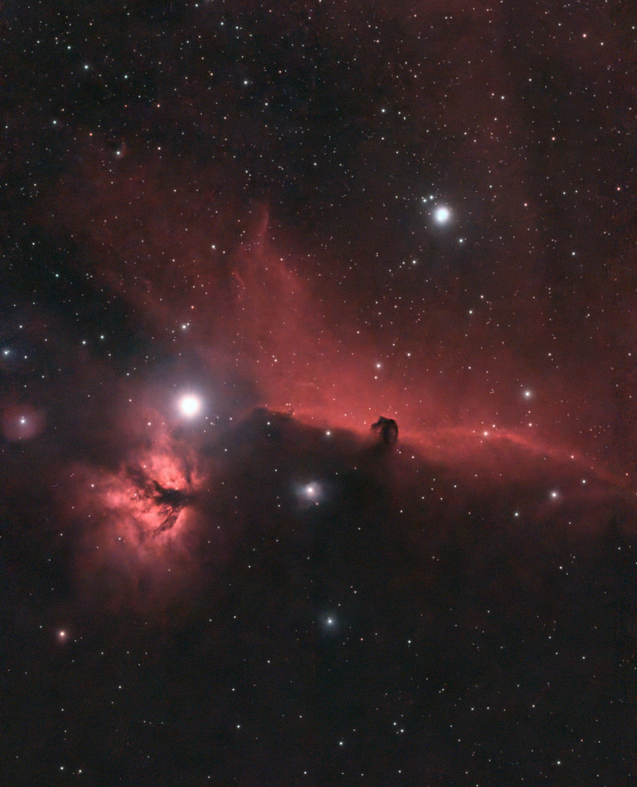
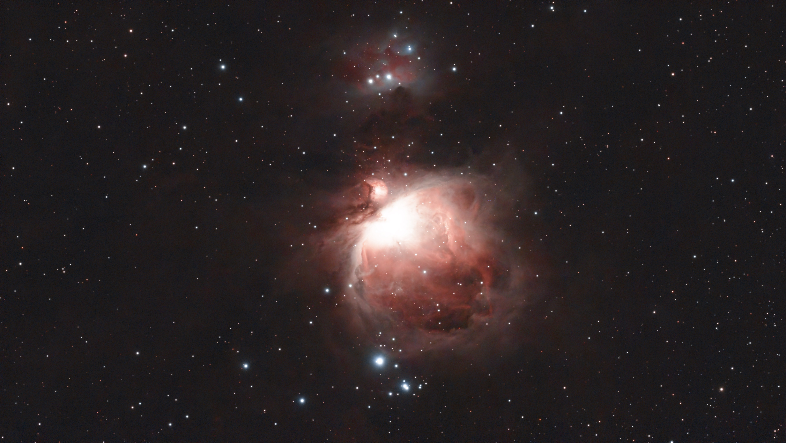
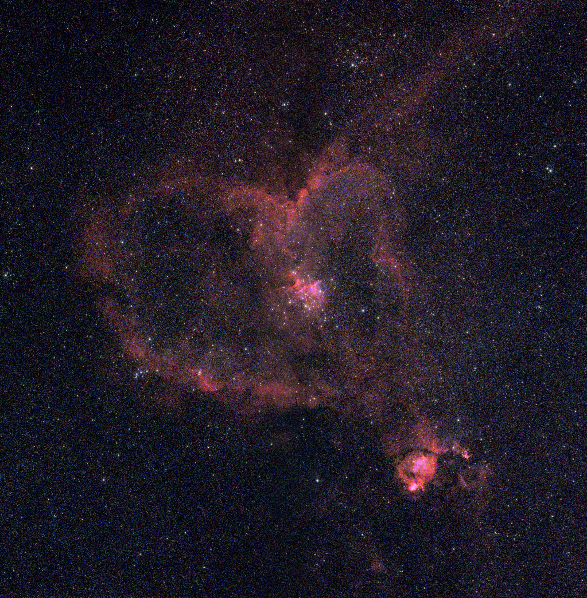
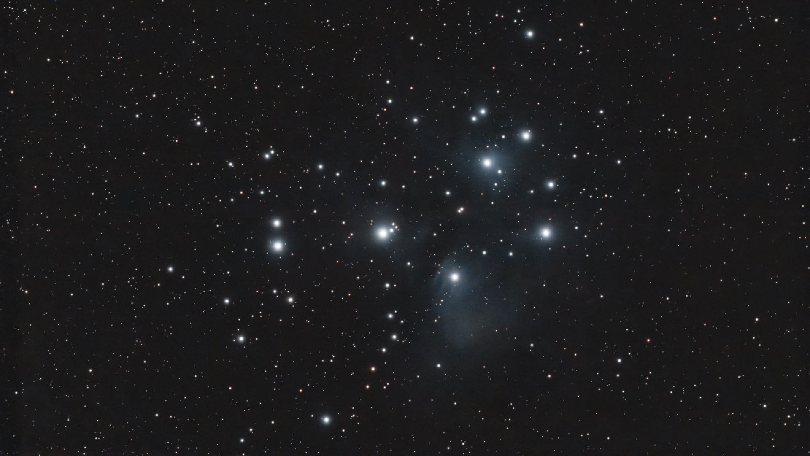
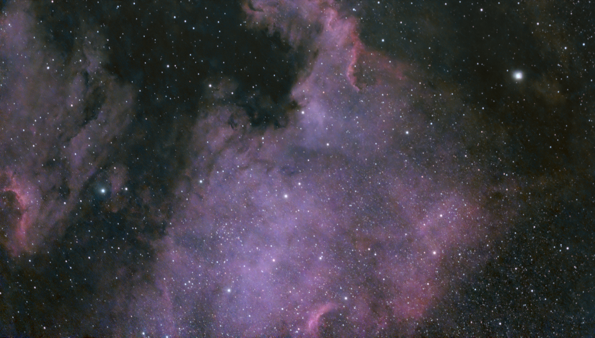
Women in Physics 物理学中的女性
一个介绍物理学史上杰出女性的系列（中文）。点击查看！
A series introducing remarkable women in the history of physics, written in Chinese. Click to read!


Stardew Valley Foods
Collection of all Stardew Valley food items I have made in real life (hover over bright icons to preview, click to view full size!)

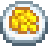

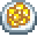


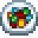
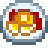

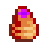

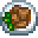

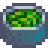

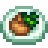
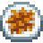

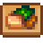
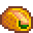
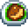
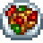

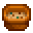
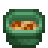


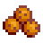
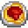
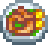
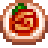
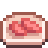
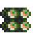
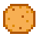
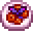

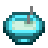
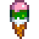
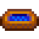


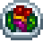
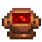
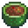

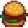


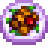
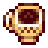
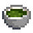
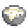
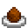
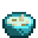
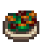
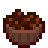
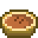
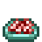
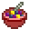

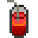
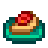
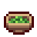
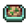